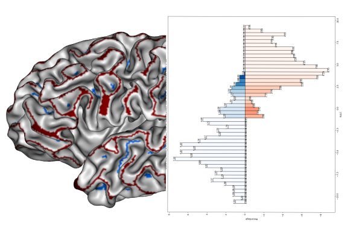

New sulcal depth estimation method
Projects
Projects
Sulcal Depth Estimation

Cortex Manual labelisation

Here we share a manual labelisation dataset for evaluate sulcal depth methods
Quantitiv Metrics for evaluate sulcal depth methods
We introduce 3 quantitives metrics you can use for evaluate depth methods
The Depth Potential Function

We bring clarification between the anatomical concept of depth and mathematical description provided by a screened Poisson equation expressed on a mesh.
Development description of the cortex

We explore the use of the sulcal depth as a spatio temporal morphological feature for describing developement trajectory of the cortical surface